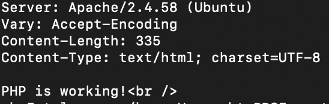
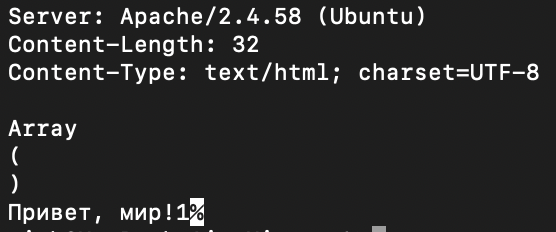
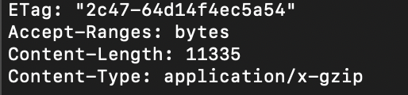
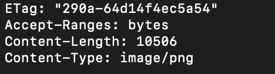
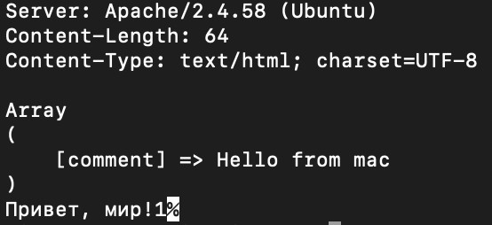
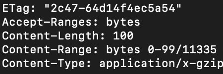
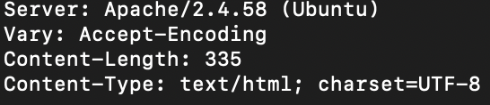

Получение главную страницу методом GET в протоколе HTTP 1.0

Рис 1. Результат после использования команды GET /index.php HTTP/1.0
Получение внутренней страницы методом GET в протоколе HTTP 1.1

Рис 2. Результат выполнения команды GET /files/index.php HTTP/1.1

Рис 3. Результат после введения команды HEAD /files/files.tar.gz HTTP/1.1

Рис 5. Результат после введения команды HEAD /files/image.png HTTP/1.1

Рис 5. Результат после введения команды POST /index.php HTTP/1.1 comment=Hello+from+macOS

Рис 5. Результат после введения команды GET /files/files.tar.gz HTTP/1.1 Range: bytes=0-99

Рис 5. Результат после введения команды HEAD /index.php HTTP/1.1